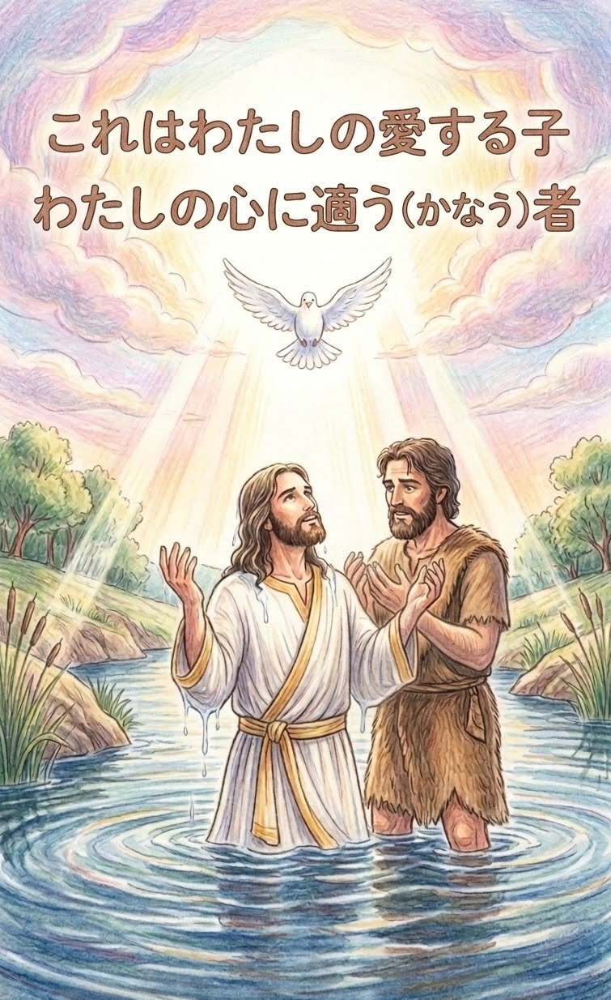
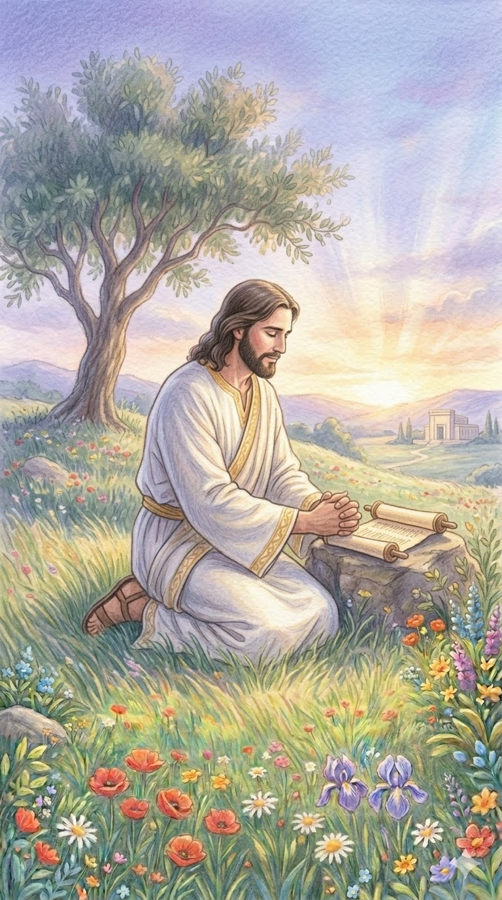
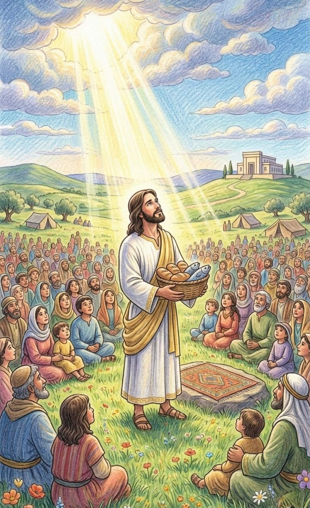
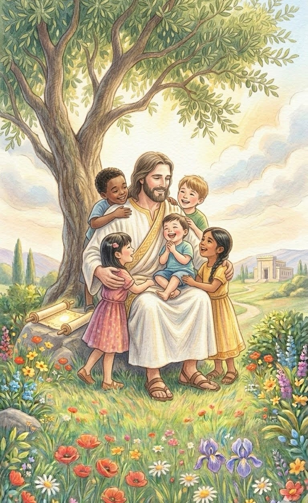
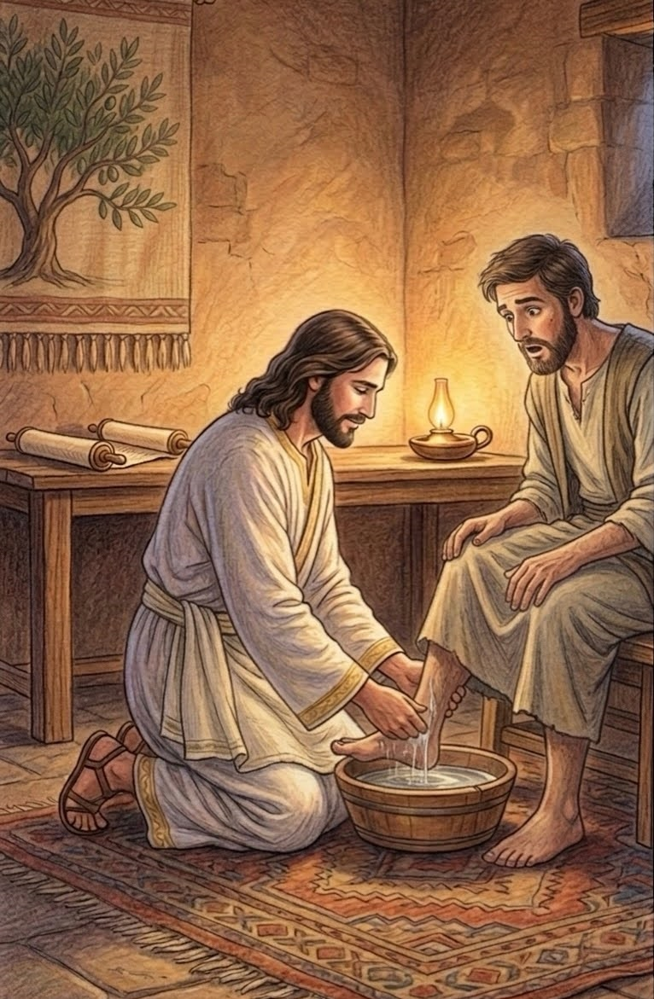
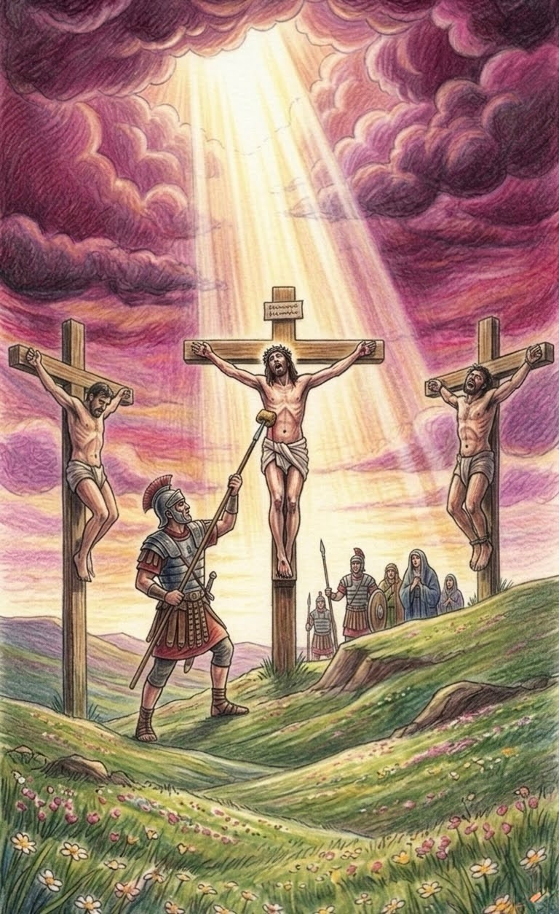
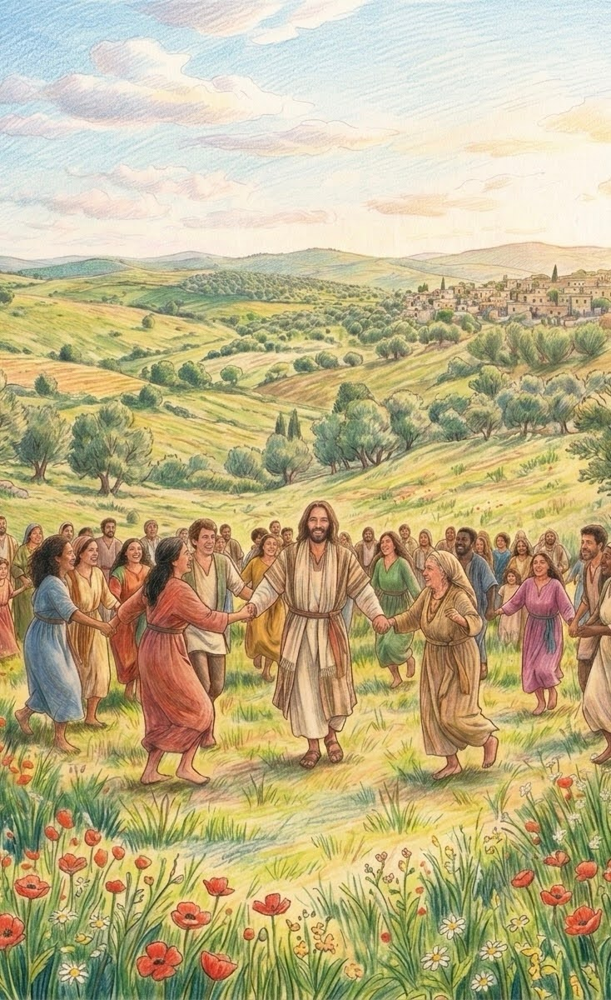
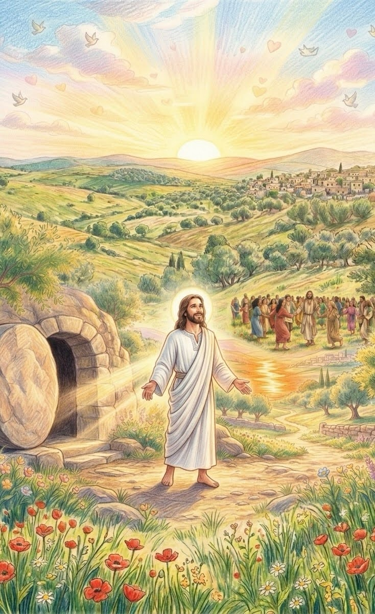

お手本であるイエスさま
イエスさまは、わたしたちの
「さいこうの お手本」です。
イエスさまが どんなふうに
まわりを 愛して、
どんなふうに 毎日を
すごしていたのか。
その 優しさを 見つけに
いっしょに ページを
めくってみましょう。

神さまの子どもになる
イエスさまは「みんなの
お手本に なるために」と
洗礼を受けられました。 水から上がると、天から
神さまの声が 聞こえました。
「これは わたしの 愛する子。
わたしの 心に かなう者である」
洗礼を 受けると、あなたも
「神さまの 愛する子ども」という
とくべつな 身分に かわります。
『これは わたしの 愛する子、
わたしの 心に かなう者である。』
（マタイ 3:17）
本当のことを見分ける
お腹が ぺこぺこの とき、
悪魔が やってきて
「うそ」を たくさん 言って
イエスさまを 惑わせました。
でも イエスさまは、神さまの
「本当のこと」を 語って、
うそを はねのけました。
聖書のことばは、うそを
見分ける 強い 力に なるよ。
『人は パンだけで
生きるものではない。
神の口から 出る 一つ一つの
言葉で 生きる。』
（マタイ 4:4）

ひとりで祈る
まだ 暗い 朝早く、
イエスさまは 静かな 場所へ
行き、お空の 神さまと
お話しを しました。
神さまと 過ごす 時間は、
イエスさまにとって
一番 大切な 元気の 源でした。
うれしい 時も、悲しい 時も、
イエスさまみたいに
神さまに お話ししてみてね。
『朝早く まだ 暗いうちに、
イエスは 起きて
人里離れた 所へ 出て行き、
そこで 祈っておられた。』
（マルコ 1:35）

神さまは満たしてくださる
食べ物が 少ししか なくても、
イエスさまは まず
「神さま、ありがとう」と
感謝しました。
すると、不思議なことに
みんなが お腹いっぱい
食べることが できたのです。
「足りないよ」と 心配する前に
イエスさまのように
まず 感謝して 祈ってみよう。
『イエスは パンを取り、
感謝の 祈りを 唱えてから、
分け与えられた。』
（ヨハネ 6:11）
嵐を静める
大きな 嵐で 船が 揺れても、
イエスさまは 怖がりません。
風に向かって 「静まれ！」と
言うと 波は 止まりました。
嵐を 静める 力を 持っている
イエスさまが、あなたの 船に
一緒に 乗って 守っているよ。
『なぜ 怖がるのか。
信仰の 薄い 者たちよ。』
（マタイ 8:26）

子供たちを祝福する
イエスさまは 子どもたちが
大好きでした。
一人ひとりを 抱きしめて
「みんな、神さまの
大切な 宝物だよ」と
教えてくれました。
周りの お友達に
「大切だよ」という 気持ちを
言葉にして 伝えてみてね。
『子供たちを わたしの
ところへ 来させなさい。
妨げては ならない。』
（マルコ 10:14）

足を洗う
イエスさまは リーダーなのに
お弟子さんたちの
汚れた 足を 洗いました。
「大切なのは 威張ることでは
なく、互いに互いを自分よりすごい
人だと思い合うことですよ」
と 教えてくれた のです。
『わたしが あなたがたに
したとおりに、あなたがたも
するようにと お手本を
示したのである。』
（ヨハネ 13:15）

嫌なことをされても許す
イエスさまは、自分を
いじめた 人たちの ために
「彼らを 許してください」と
心から大きな声で祈りました。
憎むのではなく、許すことが
本当の 強さだと
教えてくれたのです。
『父よ、彼らを お赦し
ください。自分が 何を
しているのか 知らない
のです。』
（ルカ 23:34）

互いに愛し合いなさい
イエスさまは 言いました。
「わたしが 愛したように、
みんなも お互いを 大切に、
愛し合いなさい」
イエスさまからもらった
大きな 愛を、あなたも
周りの 人に 分けてあげよう。
『わたしが あなたがたを
愛したように、あなたがたも
互いに 愛し合いなさい。』
（ヨハネ 13:34）

最高のプレゼント
悲しい お別れから 3日目、
イエスさまは 生き返りました！
「私は いつも そばにいるよ」
と 希望を くれました。
イエスさまは 今も
あなたの すぐ そばに
いるよ。一緒に 明るい
明日へ 歩いていこう！
『わたしは 復活であり、
命である。わたしを 信じる
者は、死んでも 生きる。』
（ヨハネ 11:25）
おしまい